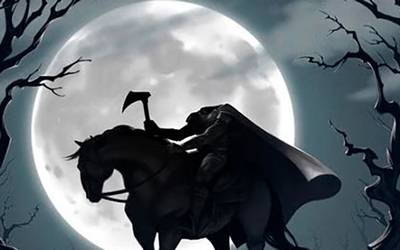

Desde hace siglos, la figura del jinete sin cabeza cabalga por la imaginación humana como una sombra imposible de desterrar. En distintas regiones del mundo, separados por océanos y culturas, aparecen relatos inquietantemente similares: un espectro montado a caballo, condenado a vagar durante la noche buscando algo que perdió violentamente. Tal vez el detalle más perturbador sea que casi siempre surge en caminos desiertos, páramos cubiertos de niebla o bosques silenciosos donde el sonido de los cascos rompe la calma como un anuncio de muerte. La leyenda parece alimentarse de un miedo humano: el terror a la mutilación, a la guerra y a la pérdida de identidad. Porque el jinete sin cabeza no es únicamente un monstruo; es un hombre condenado a existir incompleto.
El relato más famoso nació en Sleepy Hollow, un pequeño valle del estado de Nueva York inmortalizado por Washington Irving en 1820. Según la leyenda, el espectro era un soldado hessiano, un mercenario alemán contratado por los británicos durante la Guerra de Independencia de Estados Unidos, quien perdió la cabeza por el impacto de una bala de cañón en plena batalla. Desde entonces, el fantasma cabalga cada noche buscando su cabeza perdida. Los habitantes afirmaban verlo atravesar puentes y cementerios bajo la luz espectral de la luna, sosteniendo una calabaza ardiente en lugar del cráneo ausente. Irving convirtió el relato en un símbolo del terror gótico americano, aunque muchos creen que la historia ya circulaba entre colonos holandeses mucho antes de ser escrita.
Adel relato creado por Irving, el jinete sin cabeza ya existía mucho antes en la tradición celta de Irlanda bajo el nombre del Dullahan. Se cree que esta criatura demoníaca recorre los caminos montada sobre un caballo negro, llevando su propia cabeza bajo el brazo. Su rostro es descrito como una calavera sonriente con piel putrefacta y ojos que brillan como brasas. El Dullahan no busca su cabeza: la utiliza para observar a los vivos mientras anuncia la muerte. Cuando detiene su caballo frente a una casa y pronuncia un nombre, la persona llamada muere de inmediato. En algunos relatos, el látigo del espectro está hecho con una columna vertebral humana. La figura es tan temida que muchos campesinos evitan salir durante la noche por miedo a escuchar el sonido húmedo y fantasmal de su carruaje acercándose entre la niebla.
Otra de las figuras que dan cuenta de un jinete sin cabeza se halla en Escocia en donde aparece la figura de Ewen, un espectro decapitado que vaga por las Highlands tras haber muerto en combate. Algunas versiones lo describen como un antiguo caudillo traicionado en batalla cuya alma quedó atrapada entre el orgullo y la venganza. Se dice que su aparición suele ir acompañada de tormentas repentinas y del galope desesperado de un caballo invisible. Como ocurre con muchos relatos escoceses, el paisaje juega un papel fundamental: montañas cubiertas de bruma, castillos derruidos y caminos solitarios contribuyen a crear la sensación de que el espíritu todavía cabalga entre los vivos. El mito refleja el peso histórico de las guerras tribales y las ejecuciones violentas que marcaron la memoria colectiva de aquellas tierras.
En Ecuador, la figura adopta una forma propia a través del Descabezado de Riobamba. Según el relato popular, se trata del alma de un hombre que murió decapitado de manera trágica y que aparece durante la madrugada recorriendo calles vacías o caminos rurales. Algunos testigos afirman escuchar cadenas, cascos o lamentos antes de verlo surgir entre la oscuridad. En ciertas versiones monta un caballo negro; en otras avanza mientras sostiene su cabeza ensangrentada entre las manos. Como muchas leyendas andinas, el relato mezcla elementos indígenas y españoles, funcionando además como advertencia moral para quienes deambulan de noche o llevan una vida considerada pecaminosa.
El fenómeno del jinete sin cabeza es abordado por la ciencia como producto de una combinación de memoria colectiva, miedo ancestral y sugestión cultural. Las apariciones suelen ocurrir en lugares oscuros y aislados donde el cerebro humano interpreta estímulos ambiguos que incluyen a sombras, sonidos lejanos, niebla o reflejos como figuras amenazantes. Además, las guerras, ejecuciones y accidentes violentos dejaron imágenes grabadas en las sociedades antiguas, transformándose con el tiempo en relatos míticos transmitidos de generación en generación. Para la antropología, el jinete sin cabeza representa el miedo a la muerte repentina y a la pérdida de la identidad humana. Y aunque la ciencia justifique este fenómeno a través de los caminos de la razón, el jinete sin cabeza seguirá cabalgando en la penumbra eterna de la humanidad, allí donde el miedo, la leyenda y el misterio aún susurran bajo la niebla de la noche.